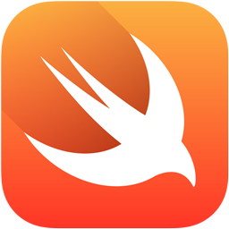

Java
 Java es un lenguaje de programación y una plataforma
informática que fue comercializada por primera vez en 1995 por Sun Microsystems. Hay muchas
aplicaciones y sitios web que no funcionarán, probablemente, a menos que tengan Java instalado,
y cada día se crean más. Java es rápido, seguro y fiable.
Java es un lenguaje de programación y una plataforma
informática que fue comercializada por primera vez en 1995 por Sun Microsystems. Hay muchas
aplicaciones y sitios web que no funcionarán, probablemente, a menos que tengan Java instalado,
y cada día se crean más. Java es rápido, seguro y fiable.
C
C es un lenguaje de programación de propósito general2:1 originalmente desarrollado por Dennis Ritchie entre 1969 y 1972 en los Laboratorios Bell,1 como evolución del anterior lenguaje B, a su vez basado en BCPL.
Mas informacion.Python
 Python es un lenguaje de programación interpretado cuya filosofía hace hincapié en la legibilidad de su código.
Python es un lenguaje de programación interpretado cuya filosofía hace hincapié en la legibilidad de su código.
C#
 "C#" (pronunciado 'ci sharp' en inglés) es un lenguaje de programación multiparadigma desarrollado y estandarizado por la empresa Microsoft como parte de su plataforma .NET, que después fue aprobado como un estándar por la ECMA (ECMA-334) e ISO (ISO/IEC 23270).
"C#" (pronunciado 'ci sharp' en inglés) es un lenguaje de programación multiparadigma desarrollado y estandarizado por la empresa Microsoft como parte de su plataforma .NET, que después fue aprobado como un estándar por la ECMA (ECMA-334) e ISO (ISO/IEC 23270).
C++
 C++ es un lenguaje de programación diseñado en 1979 por Bjarne Stroustrup. La intención de su creación fue extender al lenguaje de programación C mecanismos que permiten la manipulación de objetos.
C++ es un lenguaje de programación diseñado en 1979 por Bjarne Stroustrup. La intención de su creación fue extender al lenguaje de programación C mecanismos que permiten la manipulación de objetos.
VisualBasic.net
 Visual Basic .NET (VB.NET) es un lenguaje de programación orientado a objetos que se puede considerar una evolución de Visual Basic implementada sobre el framework .NET.
Visual Basic .NET (VB.NET) es un lenguaje de programación orientado a objetos que se puede considerar una evolución de Visual Basic implementada sobre el framework .NET.
JavaScript
 JavaScript (abreviado comúnmente JS) es un lenguaje de programación interpretado, dialecto del estándar ECMAScript.
JavaScript (abreviado comúnmente JS) es un lenguaje de programación interpretado, dialecto del estándar ECMAScript.
PHP
 PHP es un lenguaje de programación de uso general que se adapta especialmente al desarrollo web.2 Fue creado inicialmente por el programador danés-canadiense Rasmus Lerdorf en 1994.
PHP es un lenguaje de programación de uso general que se adapta especialmente al desarrollo web.2 Fue creado inicialmente por el programador danés-canadiense Rasmus Lerdorf en 1994.
SWIFT
 Swift es un lenguaje de programación multiparadigma creado por Apple enfocado en el desarrollo de aplicaciones para iOS y macOS. Fue presentado en la WWDC 20147 y está diseñado para integrarse con los Frameworks Cocoa y Cocoa Touch; puede usar cualquier biblioteca programada en Objective-C y llamar a funciones de C.
Mas informacion.SQL
SQL (por sus siglas en inglés Structured Query Language; en español lenguaje de consulta estructurada) es un lenguaje de dominio específico, diseñado para administrar, y recuperar información de sistemas de gestión de bases de datos relacionales
Mas informacion.Ruby
 Ruby es un lenguaje de programación interpretado, reflexivo y orientado a objetos, creado por el programador japonés Yukihiro "Matz" Matsumoto, quien comenzó a trabajar en Ruby en 1993, y lo presentó públicamente en 1995.
Ruby es un lenguaje de programación interpretado, reflexivo y orientado a objetos, creado por el programador japonés Yukihiro "Matz" Matsumoto, quien comenzó a trabajar en Ruby en 1993, y lo presentó públicamente en 1995.